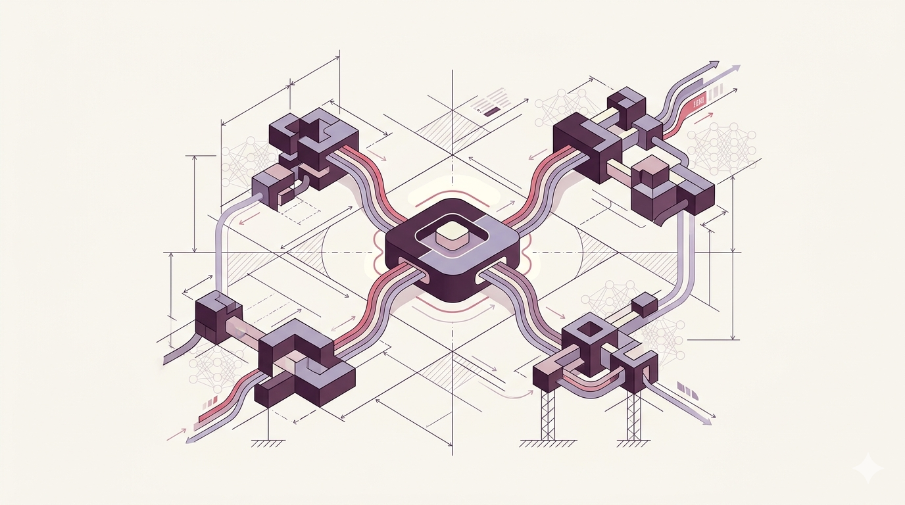

Hello, I'm
Software Engineer • AI Engineer • Backend Developer
Building intelligent systems, scalable backend platforms, fintech infrastructure and AI-powered solutions for real-world impact.
Bridging deep technical engineering with product-minded impact across Africa

I'm a Software Engineer and AI Engineer with deep expertise in artificial intelligence, computer vision, deep learning, and backend systems engineering. My work spans Spring Boot microservices, digital banking platforms, payment systems, and fintech infrastructure — building technology that serves real people across Africa.
Whether designing scalable system architectures, training deep learning models, or building computer vision workflows, I bring a full-stack engineering mindset combined with AI specialization. I'm the Backend Engineer and AI/ML Developer behind Mifugo360 — a platform transforming livestock management through technology.
At E & M Technology House, I focus on Spring Boot Microservices, Digital Banking Platforms, Payment Systems, Backend Architecture, and AI Solutions. I believe technology is the strongest lever for Africa's transformation.
From civil engineering foundations to building AI-powered systems
Building AI systems, fintech platforms, backend services, computer vision solutions and scalable digital products. Currently at E & M Technology House and leading Mifugo360.
Engineering scalable microservices for digital banking and payment platforms. Building backend architecture, AI solutions, and enterprise-grade systems.
Deepened expertise in software engineering, backend development, AI and machine learning through intensive personal projects and independent study. Built production-ready systems and computer vision pipelines.
Graduated with a Bachelor of Technology in Civil Engineering Technology, developing structural thinking, analytical problem-solving, and a systems-oriented approach to challenges — foundations that now inform every system I build.
A comprehensive toolkit spanning AI, backend engineering, and system design
Building and deploying neural networks for computer vision, object detection, classification, and intelligent decision systems.
Developing real-world vision systems for object detection, image segmentation, facial recognition, and visual data processing pipelines.
Architecting and building scalable, resilient microservice architectures for high-throughput financial systems and enterprise platforms.
Engineering digital banking platforms, payment processing systems, and financial infrastructure designed for African markets.
Building and integrating payment platforms, transaction engines, and financial processing systems that move money reliably and securely.
Designing distributed systems, event-driven architectures, and scalable infrastructure that handles millions of transactions.
Every project includes the problem, solution, technologies, architecture, and measurable impact
A comprehensive technology platform transforming livestock management in Africa. Combines IoT, data analytics, and mobile-first design to help farmers manage health, breeding, and market access for their livestock.
A scalable digital banking platform built with Spring Boot microservices architecture. Features account management, transaction processing, loan origination, and real-time notifications — designed for the unbanked and underbanked across Africa.
A production-ready computer vision system leveraging deep learning for object detection, classification, and real-time visual analysis. Built with TensorFlow/PyTorch and deployed at the edge.
A robust, scalable payment processing system handling transactions, mobile money integration (M-Pesa), reconciliation, and settlement — built for Africa's mobile-first economy.
Engineering leadership and technical delivery across fintech, AI, and digital platforms
Focused on Spring Boot Microservices, Digital Banking Platforms, Payment Systems, Backend Architecture, and AI Solutions. Engineering scalable systems for the African market.
Where structural thinking meets software engineering
Technical University of Kenya
Graduated 2022
Interested in collaborating, investing, or building technology for Africa? Reach out.